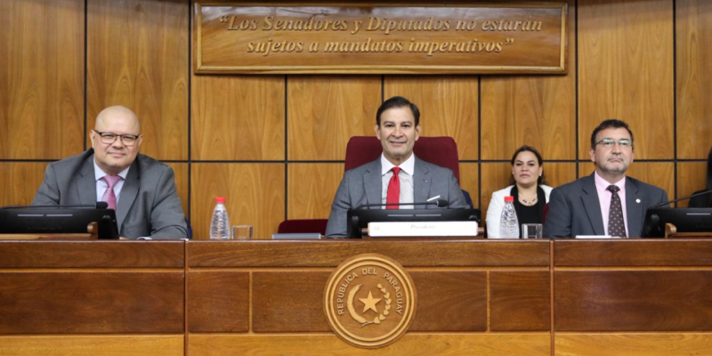
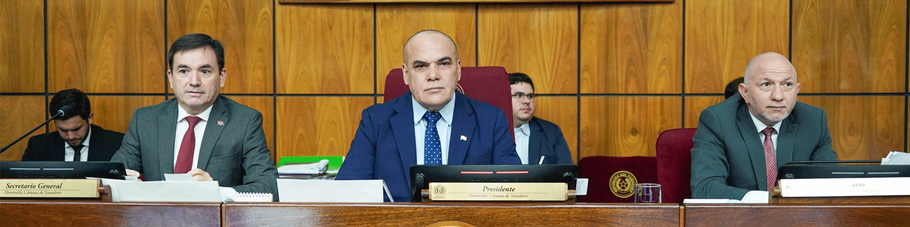

Noticias
Actualidad institucional
Archivo de noticias con enfoque editorial sobrio, imagen predominante y lectura institucional.
Crean Frente de Mujeres Parlamentarias y Oficina Tecnica de Genero en el Senado
La iniciativa fue presentada en sede legislativa y se incorpora como uno de los hechos institucionales recientes de mayor visibilidad publica.

Estudian gasto publico y programas sociales en Comision de Hacienda
La reunion ordinaria incluyo seguimiento presupuestario, revision tecnica y coordinacion de proximas comparecencias institucionales.
Senadores evaluan sistema de habilitacion de carreras de Medicina
La comision analizo criterios regulatorios y observaciones recibidas de instituciones vinculadas al sector academico y sanitario.

Senado estudiara proyecto sobre Caja Parlamentaria en proxima sesion
La agenda del pleno incorpora temas previsionales, licencias laborales y otros puntos incluidos en el orden del dia institucional.